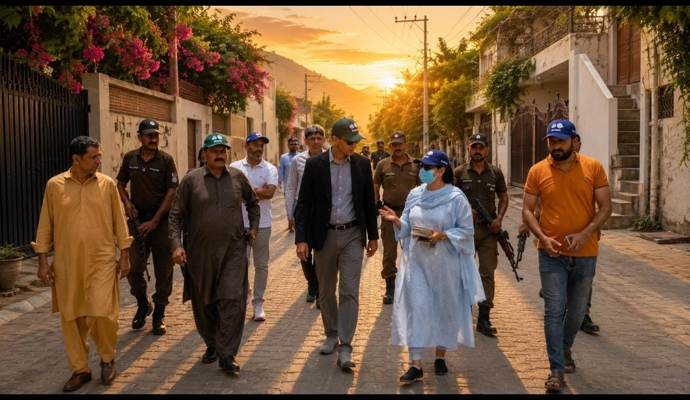
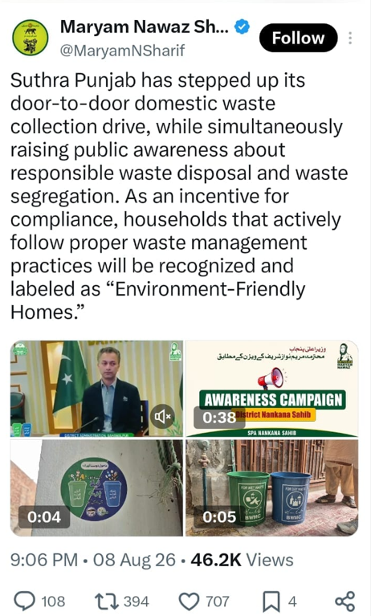
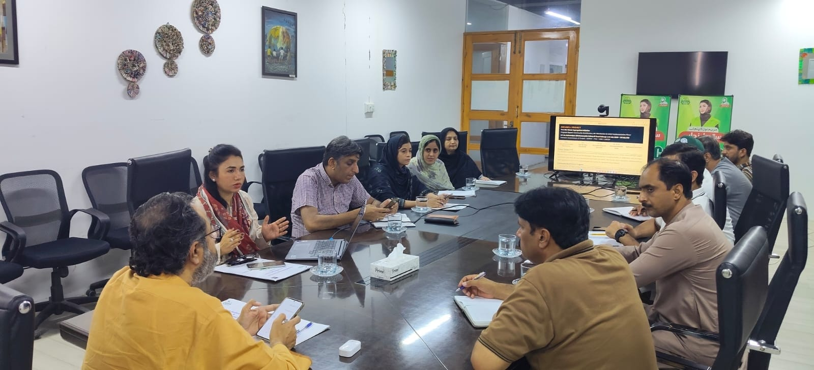
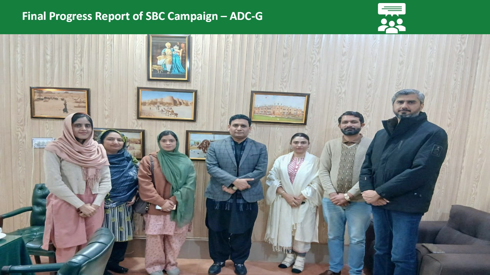
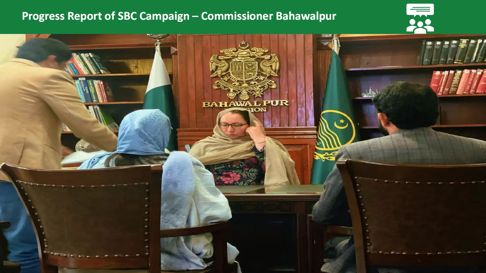

From Awareness to Sustainable Practice
The Bahawalpur journey from community awareness to the UC-14 Two-Bin Segregation Pilot and wider provincial replication.

Verified household adoption of Two-Bin wet/dry waste segregation in Bahawalpur UC-14.
Source: CIT Field Follow-up & Community Photographic Verification
Core Progression Pathway
Sustainable solid waste management occurs when institutional infrastructure meets community habits.
About the DREAMS-I Initiative
The Government of the Punjab is implementing DREAMS-I (Developing Resilient Environments and Advancing Municipal Services - Phase I), a major urban resilience initiative funded by the Asian Development Bank (ADB) under Loan No. 4396-PAK.
In Bahawalpur, the project is overhauling the municipal solid waste framework by shifting away from mixed-waste collection and open dumping toward a full Integrated Solid Waste Management (ISWM) pipeline—encompassing segregated collection, a Material Recovery Facility (MRF), and an engineered sanitary landfill.
Physical machinery and landfill sites achieve lasting impact only when household habits and municipal operations synchronize through structured Social and Behaviour Change Communication (SBCC).

Project Rationale: Pipeline Transition
Moving from unsegregated dumping to a segregated collection-to-disposal pipeline: source segregation → Material Recovery Facility (MRF) → scientific landfill.
A Connected Development Ecosystem
Rather than a conventional donor-client hierarchy, DREAMS-I operates as a mutually reinforcing ecosystem connecting multilateral financing, municipal operations, international child & WASH expertise, and citizen participation.
Formalized Cooperation between ADB & UNICEF
Signed on 5 March 2024 between ADB Country Director Yong Ye and UNICEF Representative Abdullah Fadil to unite capital investment with behavioral communication across Bahawalpur and Rawalpindi.
Asian Development Bank
Provides principal loan financing (Loan 4396-PAK), technical guidelines, safeguard standards, and capital reform supervision.
UNICEF Pakistan
Designs social and behaviour change communication (SBCC) modules, educational tools, documentary storytelling, and inclusive mobilization.
BWMC Bahawalpur
Executes daily door-to-door waste collection, vehicle deployment, beat mapping, sanitary worker supervision, and bin distribution.
Govt & Local Admin
Deputy Commissioner, Divisional Commissioner, PCU, and Local Government department aligning city operations with the Chief Minister's vision.
Citizenry & Workers
Households segregating daily, Zero Waste student ambassadors, women participants, and frontline sanitary workers as change agents.
The Bahawalpur Implementation Journey
Explore how the initiative grew systematically from documentary research to household action and provincial directive.
Pre-Inception Documentary: Film for Change
Ahead of on-ground distribution, a 30-minute documentary—"Film for Change: Transforming 10,000 Lives Through Stories"—was commissioned. It recorded Bahawalpur's mixed waste dumping challenges and introduced the conceptual Two-Bin System (Blue for Dry, Green for Wet) with relatable community characters.


Mass Community & Institutional Engagement
Carried out across greater Bahawalpur via two coordinated facilitation units (Team A and Team B). Reached 10,109 individuals through 150 awareness sessions (115 school/college sessions, 35 community sessions).
UC-14 Two-Bin Segregation Pilot Rollout
Shifted decisively from classroom awareness to door-to-door physical implementation in UC-14 (Trust Colony & Mohammadia Colony, ~101 acres). Over 1,035 Two-Bin sets distributed across 1,300+ households with GIS beat mapping and designated collection carts.


Administrative Review & Chief Minister Directive
Deputy Commissioner Bahawalpur conducted field inspections in UC-14, observing segregated cart collections and household compliance. The DC briefed the Chief Minister of Punjab, leading to an official directive to replicate the Bahawalpur UC-14 Two-Bin Segregation model across Punjab under "Suthra Punjab".


From Communication to Behaviour Change
SBCC is not passive marketing—it is an evidence-based behavioral framework designed to take communities from passive exposure to daily, ingrained waste segregation.
Film Screenings
Screened in community centers, schools, and mohallas. Relatable character narratives introduced why wet and dry waste must be separated at home.

Practical Demonstrations
Live hands-on segregation of real domestic waste using prototype bins, teaching residents to keep wet kitchen food scraps out of dry plastics and cartons.

School Outreach (115 Sessions)
Extensive school sessions at institutions like G.G.S Canal Road and Abbasia B.H.S.S, transforming students into household hygiene catalysts.

Community Sessions (35 Hubs)
Gatherings in residential lanes, drawing neighborhood elders, family heads, and local influencers to build localized social accountability.

Women’s Community Sessions
Women made up ~70% of relevant community session participants, reflecting their direct, daily control over domestic kitchen waste sorting.

Transgender Community Workshops
Dedicated awareness classes and discussions conducted with transgender community members, ensuring whole-of-society municipal inclusion.

Zero Waste Warriors
A student ambassador corps in flagship Bahawalpur schools monitoring campus cleanliness and championing household segregation.

Eco-Pencil Making Workshops
Experiential workshops converting discarded waste paper into usable graphite pencils, demonstrating the tangible worth of dry recyclables.
Inclusive Community Mobilization
The Bahawalpur campaign systematically reached demographic groups that are often marginalized or omitted in traditional engineering-heavy waste projects.
Women as Household Stewards
Women comprised approximately 70% of participants (6,908 out of 10,109 reached) in relevant community awareness sessions.

Zero Waste Warriors: Student Ambassadors
Engaging over 115 institutional sessions across Bahawalpur, the Zero Waste Warriors initiative trained students to become environmental ambassadors, educating parents and peers on dry vs wet waste segregation.
Transgender Community Inclusivity
The initiative conducted dedicated awareness sessions and interactive workshops with transgender community members in Bahawalpur, respecting their dignity and civic leadership.
The Two-Bin Source Segregation System
Clear, intuitive color-coding that makes source waste segregation straightforward for every household member.
Green Bin: Wet / Organic Waste
Consists of biodegradable items that break down naturally. Segregating wet waste prevents offensive odors, avoids liquid contamination of dry materials, and creates feedstocks for agricultural compost.
Blue Bin: Dry / Recyclable Waste
Consists of clean, dry items suitable for the Material Recovery Facility (MRF) or secondary recycling markets. Keeping them dry preserves their economic and material value.
Test Your Source Segregation Skills
Drag or click any item to assign it to its designated collection bin.
UC-14: From Awareness to Practice
The landmark pilot in Union Council 14 (Mohammadia Colony & Trust Colony) that turned Bahawalpur’s behaviour-change strategy into measurable on-the-ground municipal reality.
Community Mobilization
Initial meetings with colony elders and local leadership on 15 July 2026 to outline the two-bin initiative and gain neighborhood trust.
Door-to-Door Awareness
Dedicated Social Mobilizer teams walked door-to-door explaining wet/dry differences, answering queries, and addressing domestic space constraints.
Household Engagement
Structured conversations with homemakers, demonstrating where bins should sit in kitchens and courtyards for easiest daily sorting.
Two-Bin Practice
Handing over 1,035 pairs of color-coded Green (Wet) and Blue (Dry) containers with user flipbooks and reminder checklists.
Segregated Collection
BWMC collection carts were adapted with compartmentalized bins so that segregated household waste was never mixed together during collection.
Worker Engagement
Frontline sanitary staff received specialized training, personal protective gear, and a direct revenue share from segregated recyclable sales.
Monitoring & Learning
Daily logbooks recording plastic and cardboard weights, tracking household participation rates, and documenting operational bottlenecks.
Community Ownership
Neighbourhood peer reinforcement where compliant households encouraged adjacent neighbors to maintain segregation standards.
Beat Mapping and Ground Zoning
To ensure every single lane was covered without gaps or overlaps, the City Implementation Team (CIT) zoned UC-14 into structured sanitary beats. Each beat was assigned a dedicated frontline sanitary worker paired with a social mobilizer for follow-up visits.
What the Field Taught Us
Hard-won operational principles distilled from direct municipal and community encounters in UC-14.
Communication without physical bins or immediate collection systems creates cynicism. Awareness activities must be directly paired with distribution and collection.
A single household visit does not break decades of unsegregated disposal habits. Continuous follow-up visits during weeks 2, 4, and 6 cemented the habit.
If citizens segregate their bins but the collection truck dumps everything into one mixed hopper, community trust vanishes. Operations and messaging must match perfectly.
Sanitary workers have daily, informal face-to-face contact with householders. When respected, trained, and incentivized, they become the strongest behavior reinforcers.
Clear GIS parcel boundaries and assigned staff zones create personal accountability. Workers take pride in keeping their specific beat clean.
When mohalla elders and women are brought into the design process rather than treated as passive beneficiaries, they police street cleanliness themselves.
Frontline Workers as Catalysts of Change
In conventional waste management systems, sanitary workers are often treated as invisible labor. The Bahawalpur DREAMS-I pilot deliberately repositioned workers and supervisors as active community ambassadors and respected municipal change agents.
Because sanitary workers interact with households every single morning, a word of gratitude or gentle reminder from them is 10 times more effective than a top-down notice.
During the July–August 2026 pilot monitoring, 550+ kg of clean segregated recyclables (184.5 kg plastic and 365.5 kg cardboard) were logged with a recorded value of Rs. 30,019. The proceeds (Rs. 22,639) were disbursed directly to the sanitary workers collecting and maintaining segregation in Trust Colony and Mohammadia Colony.

Sanitary Workers Recognition Ceremony
Trust Colony, Bahawalpur • 13 August 2026. Frontline teams celebrated for exemplary beat maintenance and household segregation compliance.


Institutional Leadership & Field Governance
Active field presence by Bahawalpur’s civil administration ensured operational accountability and created the high-level evidence required for provincial scaling.
DC Bahawalpur Field Visit
“Field visit of the Deputy Commissioner Bahawalpur to UC-14 to review the Two-Bin Segregation Pilot, household-level implementation, community engagement and segregated collection activities.â€

CIT & CEO BWMC Coordination
“Coordination meeting with CIT and CEO BWMC, Mr. M. Naeem Akhtar, to review implementation progress, community engagement, operational requirements and next steps.â€

ADC General Progress Briefing
Final progress update briefed to the Additional Deputy Commissioner (General) Bahawalpur, following the comprehensive campaign update submitted to the Commissioner, Bahawalpur Division.
Evidence & Verified Impact Dashboard
In strict compliance with development-sector auditing standards, every statistic presented below is drawn directly from verified field logbooks and signed progress reports.
Gender Participation (SBCC Sessions)
Reach by Facilitation Teams
Recyclable Material Recovered (kg)
Interactive GIS Map: Bahawalpur & UC-14
Explore key pilot zones, administrative centers, educational hubs, and beat divisions. Toggle filters to inspect specific field locations.
Documented Field Gallery
Every photograph is verified real project evidence, capturing moments from documentary production and school sessions to door-to-door distribution and high-level administrative reviews.



Documentary & Field Video Archives
The narrative structure of the project film: Existing Situation → Awareness → Community Engagement → UC-14 → Practice → Replication.
UC-14 Household Bin Usage & Citizen Feedback
Authentic field clip capturing householders in UC-14 sorting organic waste into green containers and presenting recyclables to BWMC frontline collectors.
"Film for Change: Transforming 10,000 Lives Through Stories" (Bahawalpur & Rawalpindi). Featuring celebrity ambassador Sarwat Gilani and local community voices. Available on project archives.
Knowledge & Resources Center
Access verified project publications, signed partner agreements, SBCC manuals, training flipbooks, and field monitoring progress briefs.
Strategic Partnership: Signed LoU ADB & UNICEF
Letter of Understanding signed 5 March 2024 between ADB Country Director Yong Ye and UNICEF Representative Abdullah Fadil for WASH and solid waste cooperation.
Waste Segregation Conversation Guide (A4)
Field facilitation manual equipped with conversational prompts, objection-handling scripts, and behavioral nudges for social mobilizers visiting homes.
Waste Segregation Flipbook (A3)
High-contrast illustrated visual aid utilized by outreach facilitators during community gatherings, school assemblies, and women's group sessions.
Waste Segregation Checklist (A3)
Household refrigerator/wall checklist categorizing wet kitchen waste versus dry recyclables in Urdu and English.
DREAMS Presentation to DC Bahawalpur
Official presentation delivered on 22 December 2025 detailing the municipal ISWM roadmap, infrastructure milestones, and UC-14 design.
UC-14 Field Progress Report
Verified monitoring data prepared by Maidah Khan (Lead - CIT Social Mobilizers), documenting daily household counts and recyclable sales.
Document Preview
From UC-14 to Wider Replication
How a neighbourhood pilot in southern Punjab generated verifiable empirical evidence, engaged high-level provincial leadership, and was mandated for scale across all Punjab municipal companies.
The Policy Uptake Trajectory
The tangible successes in UC-14—where 1,035 households segregated waste and frontline sanitary workers were rewarded through direct recyclable revenue sharing—drew immediate local administrative attention.
The model was presented to the Deputy Commissioner Bahawalpur, who conducted extensive ground inspections and briefed the Chief Minister of Punjab on its design, operational mechanics, and community adoption.
Following this briefing, the Chief Minister directed the replication of the UC-14 Two-Bin Segregation Model across Punjab, recognizing it as a proven, practical, and scalable approach to household source segregation.
Directing the province-wide "Suthra Punjab" door-to-door waste collection and segregation drive, recognizing compliant households as "Environment-Friendly Homes" with wet/dry segregation.
Six Critical Lessons Learned
Strategic insights for international development partners, municipal utilities, and government officials replicating source segregation programs.
Awareness Must Lead to Practice
Public education campaigns fail if households lack the physical infrastructure to act. The transition succeeds only when information is immediately accompanied by color-coded bins and predictable collection schedules.
Behaviour Change Requires Continuity
Habit formation is non-linear. Households typically regress to mixed dumping within 10 days if not reinforced. Structured follow-up visits by social mobilizers in weeks 2, 4, and 6 ensure permanent adoption.
SBCC and Operations Must Work Together
Behavioural communication and municipal fleet logistics must be synchronized down to the minute. If a sanitary worker mixes two segregated bins into one cart hopper, months of community trust are destroyed in seconds.
Frontline Workers Are Essential
Sanitary workers are not mere passive collectors; they are the primary face-to-face ambassadors of the municipal company. Providing them with training, protective gear, and recyclable incentive revenue creates enduring motivation.
Local Operational Realities Matter
Generic national templates do not work in diverse mohallas. Tight alleys require specialized handcarts; high-density commercial markets require evening shifts; residential zones need early morning timing before cooking begins.
Recognition and Peer Influence Reinforce Behaviour
Public affirmation of compliant households (such as the "Environment-Friendly Home" recognition) creates positive social competition, prompting neighbors to emulate successful waste sorting.
From One Community to Wider Change
“Successful waste segregation is not achieved through awareness alone. It requires continuous engagement, practical systems, community ownership and institutional support.â€
A field experience in turning source segregation from an idea into community practice.